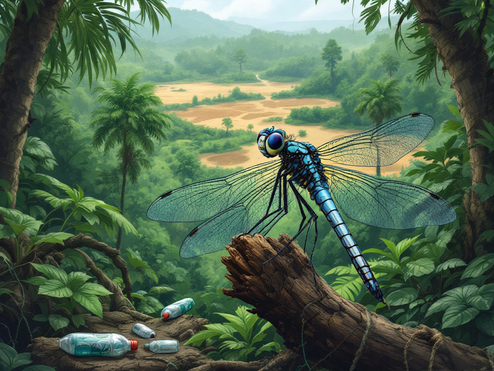
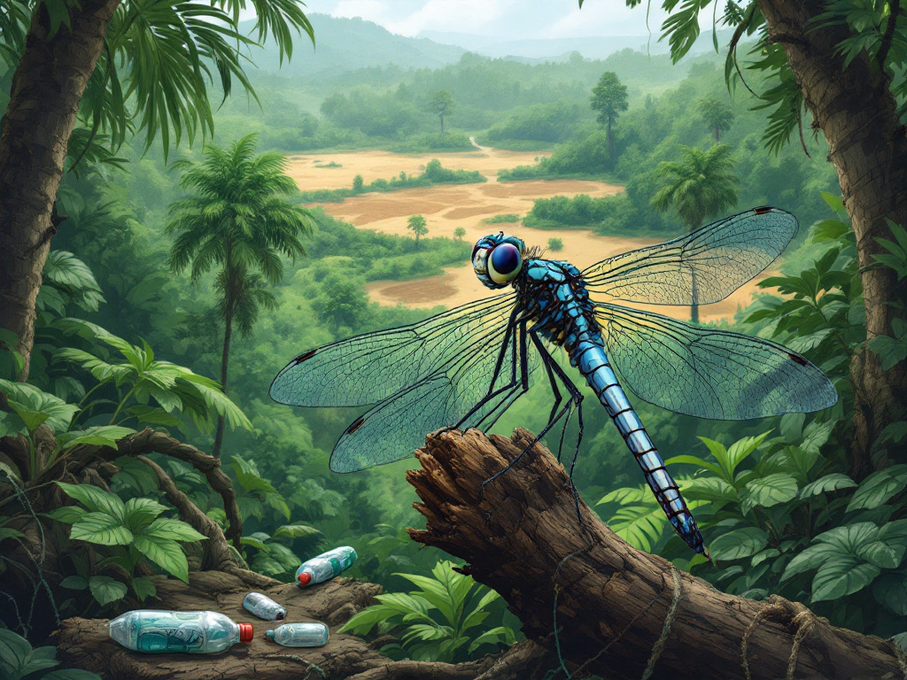

Bienvenue sur le site de l'Agrion à fer de lance
Explorez les différentes sections pour en savoir plus sur cet insecte fascinant, son habitat, les menaces qui pèsent sur lui, et bien plus encore.
Explorez les différentes sections pour en savoir plus sur cet insecte fascinant, son habitat, les menaces qui pèsent sur lui, et bien plus encore.
